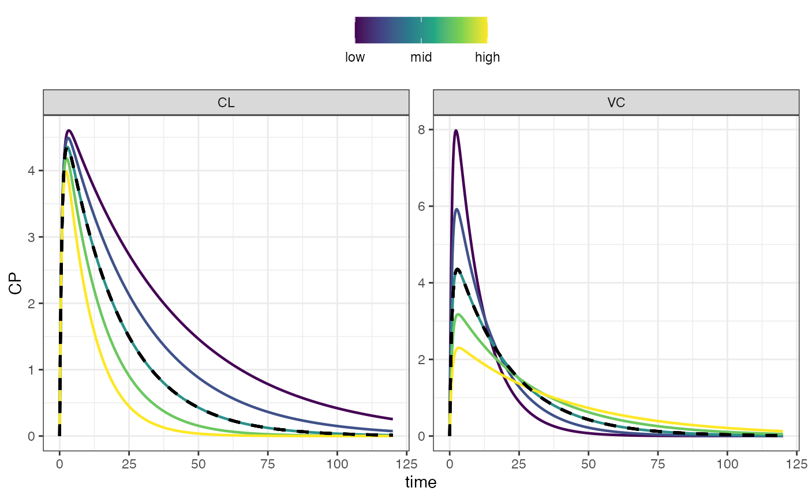
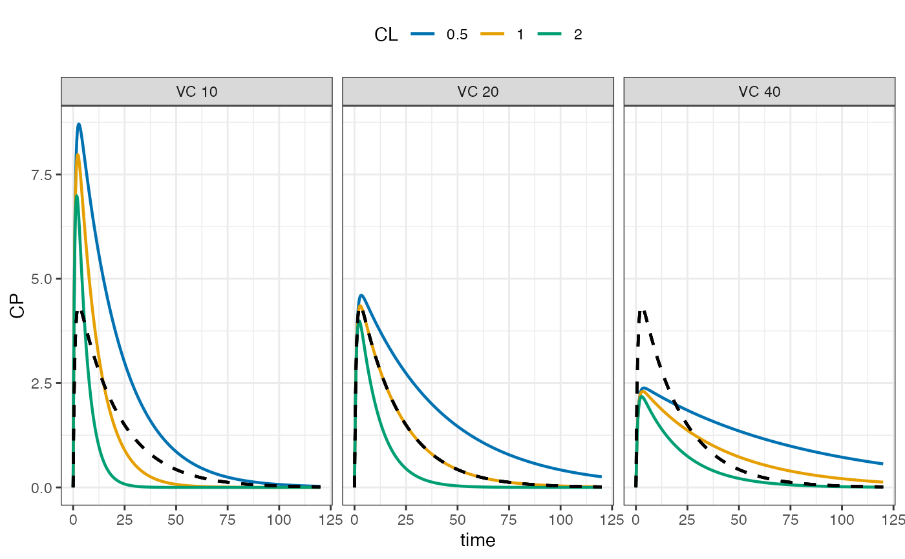
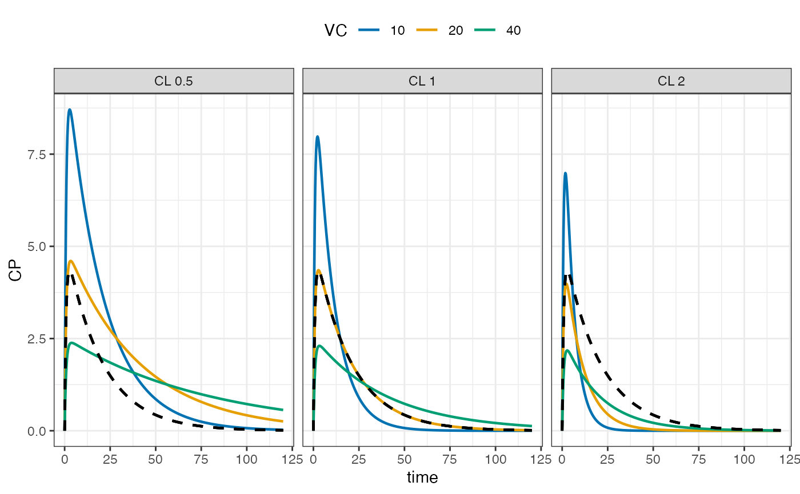
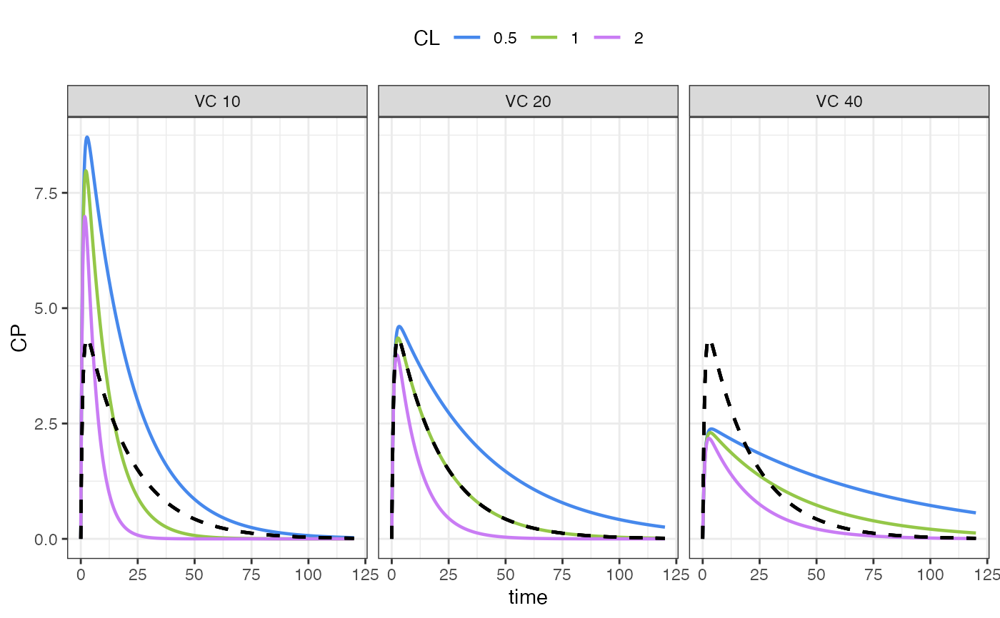

Plot sensitivity analysis results
Usage
sens_plot(data, ...)
# S3 method for class 'sens_each'
sens_plot(
data,
dv_name = NULL,
p_name = NULL,
logy = FALSE,
ncol = NULL,
lwd = 0.8,
digits = 3,
plot_ref = TRUE,
xlab = "time",
ylab = NULL,
layout = c("default", "facet_grid", "facet_wrap", "list"),
grid = FALSE,
palette = NULL,
...
)
# S3 method for class 'sens_grid'
sens_plot(
data,
dv_name = NULL,
logy = FALSE,
ncol = NULL,
lwd = 0.8,
digits = 2,
plot_ref = TRUE,
xlab = "time",
ylab = dv_name,
group = NULL,
facet = NULL,
palette = NULL,
...
)Arguments
- data
output from
sens_each()orsens_grid().- ...
arguments passed on to methods.
- dv_name
dependent variable names to plot; can be a comma-separated string; if
NULL, then the unique values ofdv_nameindataare used.- p_name
parameter names to plot; can be a comma-separates string.
- logy
if
TRUE, y-axis is transformed to log scale- ncol
passed to
ggplot2::facet_wrap().- lwd
passed to
ggplot2::geom_line().- digits
used to format numbers on the strips.
- plot_ref
if
TRUE, then the reference case will be plotted in a black dashed line.- xlab
x-axis title.
- ylab
y-axis title; not used for
facet_gridorfacet_wraplayouts.- layout
specifies how plots should be returned when
dv_namerequests multiple dependent variables; seeDetails.- grid
if
TRUE, plots from thesens_eachmethod will be arranged on a page withpatchwork::wrap_plots(); see thencolargument.- palette
a discrete color scale; like what you get from calling
ggplot2::scale_color_discrete(). Forsens_each, this is only applied whengrid = TRUE; it is ignored for all other layouts, which use a continuous viridis color scale.- group
sensitivity variable for within-panel grouping; defaults to the first sensitivity variable.
- facet
sensitivity variable for faceting when 3 sensitivity variables are being plotted; the
facetvariable will run left to right and the other variable will run up and down; this argument is ignored / not needed when there are fewer than 3 sensitivity variables.
Value
A ggplot object when one dv_name is specified or a list of ggplot
objects when multiple dv_names are specified.
Details
The layout argument is only used for the sens_each method. It lets
you get the plots back in different formats when multiple dependent
variables are requested via dv_name.
Use
defaultto get the plots back in a list if multiple dependent variables are requested otherwise a single plot is returned.Use
facet_gridto get a single plot, with parameters in columns and dependent variables in rows.Use
facet_wrapto get a plot with faceted usingggplot2::facet_wrap(), with both the parameter name and the dependent variable name in the strip.Use
listto force output to be a list of plots; this output can be further arranged usingpatchwork::wrap_plots()if desired.
When grid is TRUE, a list of plots will be returned when multiple
dependent variables are requested.
Examples
mod <- mrgsolve::house()
dose <- mrgsolve::ev(amt = 100)
out <- sens_run(
mod,
sargs = list(events = dose),
par = "CL,VC"
)
sens_plot(out, "CP")

out <- sens_run(
mod,
sargs = list(events = dose),
par = "CL,VC",
vary = "grid",
.n = 3
)
sens_plot(out, "CP")

sens_plot(out, "CP", group = "VC")

if(requireNamespace("ggsci")) {
color <- ggsci::scale_color_atlassian()
sens_plot(out, "CP", palette = color)
}
#> Loading required namespace: ggsci
